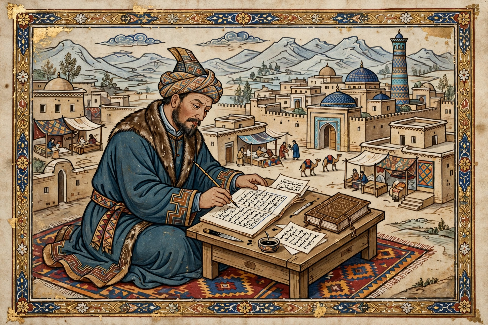

| Mahmud al-Kashgari | |
| Born | c. 1005–1008, Barsghan (or Kashgar), Kara-Khanid Khanate |
|---|---|
| Died | c. 1102, Upal, near Kashgar |
| Occupation | Lexicographer, philologist, historian |
| Known for | Dīwān Lughāt al-Turk (Compendium of the Languages of the Turks) |
Mahmud ibn Husayn ibn Muhammad al-Kashgari (Arabic: محمود بن الحسين بن محمد الكاشغري) was an 11th-century Turkic scholar and lexicographer from Kashgar, in present-day Xinjiang. He is celebrated as the author of the Dīwān Lughāt al-Turk ("Compendium of the Languages of the Turks"), the first comprehensive dictionary of the Turkic languages, written in Arabic and completed in the 1070s.

Kashgari was born into the nobility of the Kara-Khanid Khanate, probably at Barsghan on the southern shore of Lake Issyk-Kul. Driven into exile by dynastic strife, he spent years travelling among the Turkic peoples of Central Asia, recording their dialects, customs, poetry and proverbs. He eventually settled in Baghdad, where he compiled his great dictionary, dedicating it to the Abbasid caliph al-Muqtadi. He returned to his homeland late in life and died at Upal, near Kashgar, where his mausoleum still stands.
Completed about 1072–1077, the Dīwān explains some 7,500–8,000 Turkic words with Arabic equivalents, illustrated by extensive quotations from oral poetry, proverbs and epics. It is the principal surviving source for the early Turkic languages and their literature, and a landmark work of comparative linguistics. Its introduction includes a celebrated circular world map — among the earliest maps produced in the Islamic world to centre on the Turkic lands — showing Kashgar and Balasagun at the heart of the known world. The sole surviving manuscript, copied in 1266, is preserved in Istanbul; the work was published in the early 20th century and has since been translated into many languages.
Kashgari is honoured across the Turkic world as a founding figure of Turkology; universities and institutes in Kyrgyzstan, Turkey and elsewhere bear his name, and 2008 was marked by UNESCO-associated observances of the millennium of his birth in some accounts.
Turkic languages · Kashgar · Kara-Khanid Khanate · Yusuf Khass Hajib